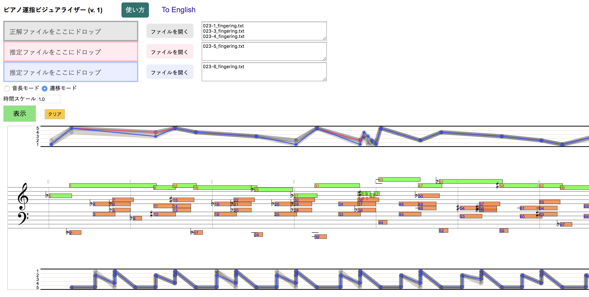

ピアノ運指ビジュアライザーでは入力としてPIGデータセットで使われている形式の運指ファイルを使えます。このデータの入手およびデータ形式の詳細についてはPIGデータセットのページをご覧ください。ピアノ運指ビジュアライザーでは、運指ファイルを観察したり比較できます。左上の色のついた領域に運指ファイルをドラッグ・アンド・ドロップするか、「ファイルを開く」ボタンをクリックして運指ファイルを選択できます。選択されたファイル名は右側のテキストボックスに表示されます。
運指を表示するには、表示ボタンをクリックしてください。
グレーの領域に入力した運指は、グレーの半透明の線で表示されます。赤と青の領域に入力した運指は、対応する色で表示されます。運指は重ねて表示されます。 グレーの運指は一番後ろに、赤はその次に、青は一番手前に表示されます。
表示には二つのモードがあります。モードはラジオボタンをクリックして変更できます。横軸のスケールを変更するには、「時間スケール」の値を変えてください。